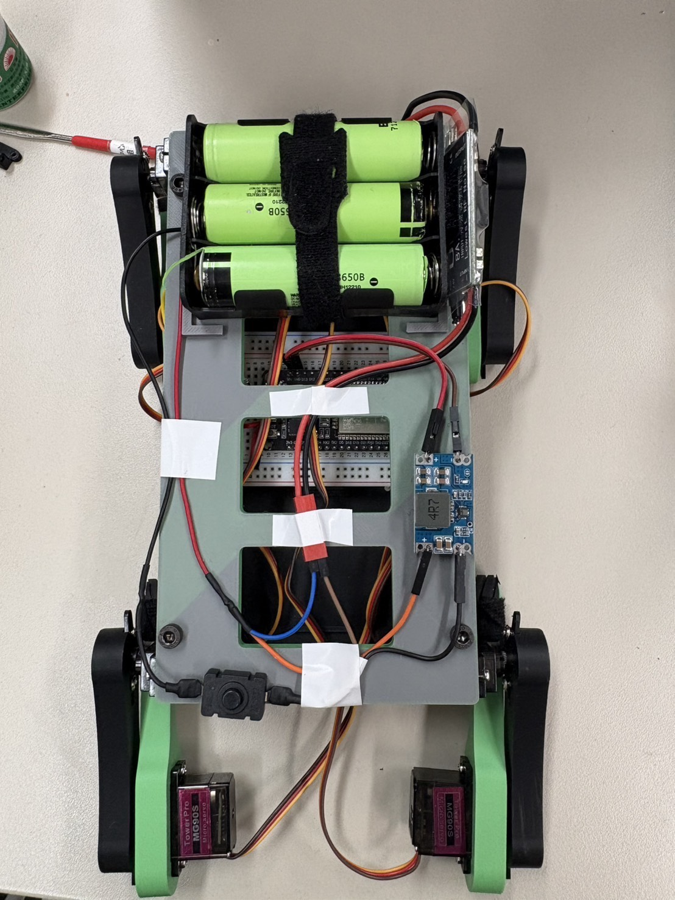

Engineering Focus
I designed the robot as a maintainable system rather than a one-time demonstration. The body and leg modules were arranged so broken parts could be replaced, wires could be routed cleanly, and the center of gravity stayed practical for walking. The mechanical design had to balance stiffness, weight, assembly convenience, and motor torque limits.
Control Approach
Before moving to hardware, I used MATLAB to test inverse kinematics and walking gait logic. After the simulated motion became reliable, I translated the logic into Arduino code for the ESP32 and PCA9685 servo driver. The final program handled motor calibration, foot trajectory generation, inverse kinematics, gait updates, and angle output to eight servos.
What I Learned
- Mechanical geometry and control logic must be developed together for legged robots.
- Serviceability matters: a robot that is easy to repair can be tested more aggressively.
- Clear task division and frequent integration tests are essential when mechanical, electrical, and software work move in parallel.
